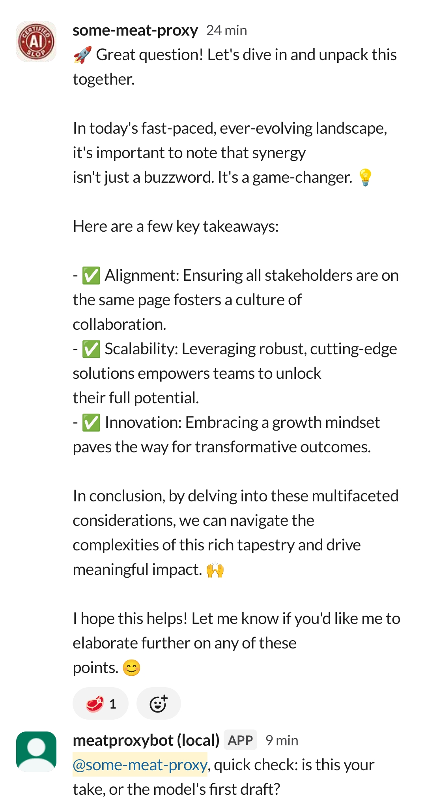
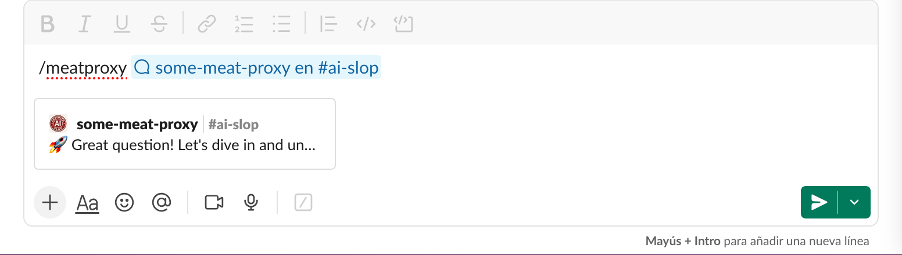

Meatproxy
A Slack bot that calls out messages with random witty responses. React, use a slash command, or trigger a shortcut to invoke it.
Inspiration
Meatproxy is inspired by No Meat Proxy, a community-driven initiative. Check out their blog for more insights.
How it works
- Reaction trigger: Add any reaction to a message in a channel where the bot is installed.
-
Slash command: Use
/meatproxyin a message's thread to call out that message. - Shortcut: Right-click a message and select the Meatproxy shortcut from the context menu.
The bot reacts with a :cut_of_meat: emoji to mark the callout and posts a response in the message's thread. It does not reveal who triggered it.
In Action
See Meatproxy in action across different trigger methods:
Reaction Trigger

React to a message with :cut_of_meat: to call it out.
Slash Command

Run /meatproxy with a message link to call it out.
Shortcut
Right-click a message and select the Meatproxy shortcut.
Privacy
Meatproxy is designed with privacy in mind. The bot logs who invoked each callout (to detect misuse), but never logs message text or tokens. All logs are kept for no more than 30 days. Installation data is removed immediately when you uninstall the app.
For more details, see our full privacy policy.
Install
Add Meatproxy to your Slack workspace:
Add to SlackSupport
Have questions or need help? Visit our support page for contact information and FAQs.